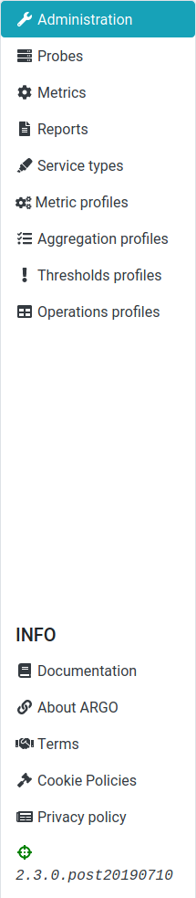
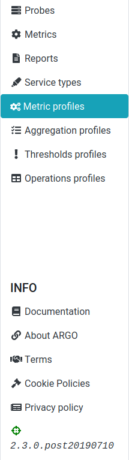

User interface
User interface is slightly different for tenant user and tenant admin user.
Tenant admin user
When tenant admin user (for tenant POEM, not to be mistaken for super admin user for SuperAdmin POEM) logs into POEM, (s)he is redirected to administration page.
On the side bar (shown in the figure below), one may access the other POEM pages: probes, metrics, reports, service types, metric profiles, aggregation profiles, thresholds profiles, and operations profiles.

On the top bar (shown in the figure below), there are ARGO logo, welcome message for user, and logout button.
By hovering over his/her name, user may see his/her details: user type (tenant user, or tenant admin user), and his/her email address.
Tenant user
Tenant users do not have permission to access administration page, so when they are logged in, they are redirected to metric profiles page.
The sidebar for tenant users (shown in the figure below) is, therefore, somewhat shorter: it does not contain link to administration, just to probes, metrics, reports, service types, metric profiles, aggregation profiles, thresholds profiles, and operations profiles.

Top bar looks the same as for admin user. The difference is in hover info. When the user hovers over his/her name, the info shown (figure below) is: user type (tenant user, or tenant admin), groups of resources associated to him/her, and his/her email address.
In this example, the user is assigned TEST group of aggregations, EUDAT group of metrics, SECMON group of metric profiles, and none of the groups of thresholds profiles.